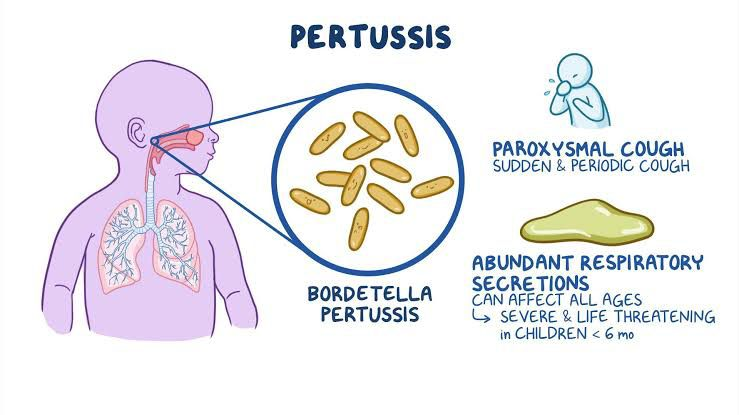
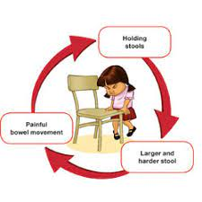

Chickenpox
Chickenpox is a highly contagious viral infection that commonly affects children. It causes an itchy rash with small, fluid-filled blisters. Chickenpox is caused by the varicella-zoster virus.
Symptoms:
- Rash with red spots that develop into blisters
- Itching, which can be severe
- Fever
- Fatigue or general discomfort
- Loss of appetite
- Headache
Precautions:
- Ensure good hygiene practices, such as frequent handwashing
- Keep the child's fingernails short to minimize scratching and prevent infection
- Use calamine lotion or other soothing creams to relieve itching
- Give the child over-the-counter pain relievers, as recommended by a healthcare professional, to reduce fever and discomfort
- Isolate the child from others, especially pregnant women, newborns, and individuals with weakened immune systems, until all blisters have crusted over
- Consult a healthcare professional for guidance on vaccination or antiviral medications, if necessary
Measles
Measles is a highly contagious viral infection that primarily affects children. It spreads through respiratory droplets and causes a characteristic rash. Measles is caused by the measles virus.
Symptoms:
- High fever
- Cough
- Runny nose
- Red, watery eyes
- Rash that starts on the face and spreads to the body
- Koplik spots (small white spots with a bluish-white center) inside the mouth
Precautions:
- Ensure the child receives the measles, mumps, and rubella (MMR) vaccine as per the recommended schedule
- Practice good hand hygiene by washing hands frequently with soap and water
- Isolate the child from others during the infectious period (around 4 days before and after rash onset)
- Cover the mouth and nose when coughing or sneezing
- Clean and disinfect frequently-touched surfaces
- Consult a healthcare professional for guidance on vaccination or treatment, if necessary
Croup
Croup is a common childhood respiratory condition characterized by inflammation of the upper airway, primarily the larynx and trachea. It leads to a barking cough and difficulty breathing. Croup is often caused by viral infections.
Symptoms:
- Barking cough that resembles a seal's bark
- Hoarse voice
- Stridor (a high-pitched sound when breathing in)
- Difficulty breathing or labored breathing
- Low-grade fever
Precautions:
- Create a calm and soothing environment for the child
- Keep the child hydrated by offering plenty of fluids
- Use a cool-mist humidifier or take the child into a steamy bathroom to ease breathing
- Encourage rest and provide comfort measures
- Consult a healthcare professional for guidance on medication options, such as oral corticosteroids, if necessary
- Seek emergency medical attention if the child's breathing becomes severely compromised or if signs of respiratory distress are present
Bronchiolitis
Bronchiolitis is a common respiratory infection that primarily affects infants and young children. It causes inflammation and congestion in the small airways of the lungs, leading to difficulty breathing. Bronchiolitis is usually caused by a viral infection, most commonly respiratory syncytial virus (RSV).
Symptoms:
- Congestion and runny nose
- Cough
- Rapid or labored breathing
- Wheezing
- Fever
- Poor feeding or decreased appetite
- Irritability or restlessness
Precautions:
- Ensure good hand hygiene by washing hands frequently
- Keep the child's environment clean and free from irritants
- Use a cool-mist humidifier to ease breathing and maintain proper humidity
- Offer fluids to keep the child well-hydrated
- Elevate the child's head during sleep to help with breathing
- Consult a healthcare professional for guidance on managing symptoms and seeking medical care, if necessary
- Follow the recommended immunization schedule, including RSV prophylaxis if indicated
Gastroenteritis
Gastroenteritis, also known as stomach flu, is a common childhood illness characterized by inflammation of the stomach and intestines. It is typically caused by a viral or bacterial infection and leads to symptoms such as diarrhea, vomiting, and abdominal pain.
Symptoms:
- Diarrhea
- Vomiting
- Abdominal pain or cramps
- Nausea
- Fever
- Loss of appetite
- Dehydration
Precautions:
- Ensure good hand hygiene by washing hands frequently with soap and water
- Encourage the child to drink plenty of fluids to prevent dehydration
- Offer oral rehydration solutions to replace lost fluids and electrolytes
- Gradually reintroduce bland and easily digestible foods after vomiting subsides
- Keep the child at home and avoid close contact with others to prevent spreading the infection
- Consult a healthcare professional for guidance on managing symptoms and seeking medical care, if necessary
- If symptoms worsen or persist, seek medical attention
Scarlet Fever
Scarlet fever is a bacterial infection that primarily affects children and is characterized by a distinctive rash, high fever, and sore throat. It is caused by group A Streptococcus bacteria.
Symptoms:
- Red rash that feels like sandpaper and typically starts on the neck, chest, and groin
- High fever
- Sore throat
- Swollen tonsils
- Strawberry-like appearance of the tongue
- Flushed face with pale ring around the mouth
Precautions:
- Ensure good hand hygiene by washing hands frequently with soap and water
- Cover the mouth and nose when coughing or sneezing
- Use tissues or elbows to touch surfaces in public places
- Avoid close contact with infected individuals
- Complete the full course of prescribed antibiotics
- Provide supportive care, such as rest and fluids, to alleviate symptoms
- Consult a healthcare professional for guidance on managing symptoms and seeking medical care, if necessary
Pertussis (Whooping Cough)

Pertussis, commonly known as whooping cough, is a highly contagious bacterial infection that primarily affects infants and young children. It causes severe coughing spells, often followed by a characteristic "whooping" sound when gasping for air. Pertussis is caused by the bacterium Bordetella pertussis.
Symptoms:
- Severe coughing spells that may end with a high-pitched whooping sound
- Coughing fits, especially at night
- Runny nose
- Mild fever
- Fatigue
- Temporary pauses in breathing (apnea) in infants
Precautions:
- Ensure good hand hygiene by washing hands frequently with soap and water
- Follow the recommended immunization schedule to prevent pertussis
- Isolate the child from others, especially infants, until antibiotic treatment has been completed
- Seek medical attention for diagnosis and appropriate treatment with antibiotics
- Encourage rest and provide comfort measures
- Offer plenty of fluids to keep the child well-hydrated
- Consult a healthcare professional for guidance on managing symptoms and seeking medical care, if necessary
Rotavirus Infection
Rotavirus infection is a common viral illness that primarily affects infants and young children. It causes inflammation of the stomach and intestines, leading to severe diarrhea and vomiting. Rotavirus is highly contagious and spreads through the fecal-oral route.
Symptoms:
- Severe watery diarrhea
- Vomiting
- Fever
- Abdominal pain or cramps
- Loss of appetite
- Dehydration
Precautions:
- Ensure good hand hygiene by washing hands frequently with soap and water
- Follow proper food handling and preparation practices
- Isolate the child from others and avoid attending school or daycare until the symptoms subside
- Offer oral rehydration solutions to prevent dehydration
- Consult a healthcare professional for guidance on managing symptoms and seeking medical care, if necessary
- Follow the recommended immunization schedule to prevent rotavirus infection
Constipation

Is your baby or child not pooping as often as he usually does? Has his poop pattern slowed down a lot, and are his stools harder than usual? He may have constipation. Other symptoms include a hard abdomen, discomfort and crankiness. It is rare for breastfed babies to suffer from constipation as breast milk is easily digested.
Symptoms:
- Stomach aches
- Pain and/or slight bleeding at the anus when passing stools due to a minor skin tear
- Loss of appetite
- Difficulty passing stools
- Passing small, hard stools
Precautions
- Encourage your child to drink plenty of fluids
- Promote physical activity
- Remind your child to heed nature's call